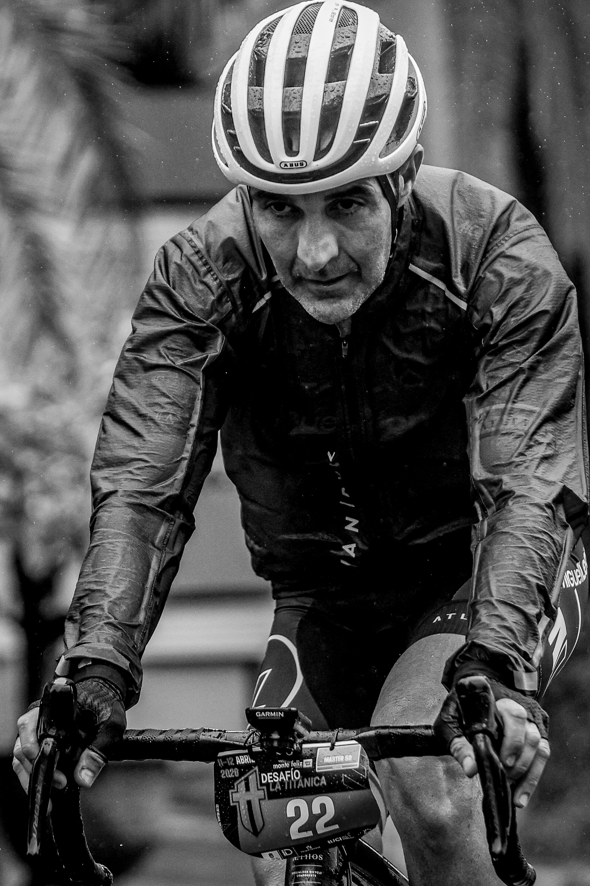

The 21st Monte Feliz – powered by Playitas Desafío La Titánica was held across Gran Canaria on 11 and 12 April 2026. The UCI-recognised event brought 170 cyclists per day to two stages centred on Agüimes and Vega de San Mateo, with coverage by the Image Media team.
Saturday's opening stage started and finished at the Auditorio de Agüimes. Its 18.3-kilometre route climbed 700 metres through the Barranco de Guayadeque and Alto Montaña Las Tierras, where Blas Rivero and Michela Santini established the first leads.

The decisive Sunday stage covered 78 kilometres from Agüimes to Vega de San Mateo with 2,300 metres of climbing. Wind and rain affected much of the route, and ramps above 20 per cent tested the field around La Atalaya, Alto de la Bodeguilla and La Asomada. The organisers cancelled the final timed sector because of the conditions, leaving two timed sections to decide the classification.
Rivero secured the men's overall victory in 1:28:46, ahead of Edgar Clemente and Niklas Brantner. Santini won the women's classification in 1:48:13, with Emma Vickman second and Mónica Alarcón third.
DG Eventos organised the race with the municipalities of Agüimes and Vega de San Mateo. Monte Feliz – powered by Playitas was the principal sponsor, while the Cabildo de Gran Canaria supported the event through its tourism and sports departments.
The Image Media coverage team comprised Paulo Nomade, Michael Rosa and Fabricio Zerves. Their photographs documented the start, the wet and demanding racing conditions, and the podium celebrations at the end of the two-day event.